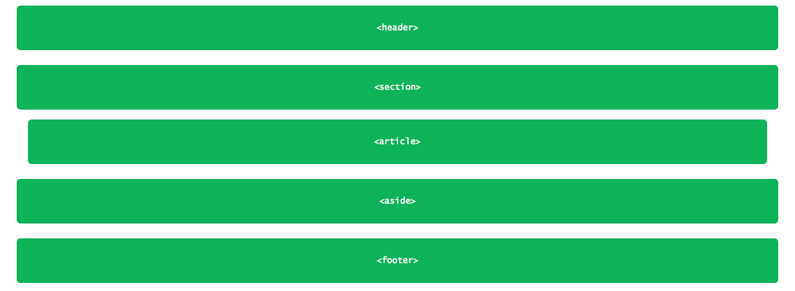

Positioning with floats
A very useful way to position element is with the float property, this feature, allow us to take an element, and remove it from the normal flow of the page, and position it next to its parent element (either in its left or right). All other elements on the page will then flow around the floated element. For example and <img> element floated to the side of a few paragraphs of text, will allow these paragraphs to wrap around the image as necessary.
When the float property is used on multiple elements at the same time, it provides the ability to create a layout by floating elements directly to or opposite each other, as seen in multiple-column layouts. What exaclty this means? examples of this?. The float property accepts a few values, being the most popular left and right
img {
float: left;
}
Floats in practice add link to another page with solved example
In a common page layout with a header, two columns in the center, and a footer at the bottom, the elements would look like this:
<header><section>See the page here.
 how to shrink images to fit the screen size? Ans/ setwidth: 100%;
Here, as block-level elements the <section> and <aside> elements will be stacked in top of one another by default. However, in the cases when setting these elements side by side is necessary/desired, by floating these elements is possible position them as two columns sitting opposite one another. The CSS to do so look like this:
section {
float: left;
}
aside {
float: right;
}
See an example of how this page would look like here and here.
When an element is floated, it will float all the way to the edge of its parent element; when no parent element is present, then, it will float all the way to the edge of the page. Floating an element will remove it from the normal flow of the page, and as seen in the previous examples, this causes the width to default the width of the content within it. This situation isn't always desirable, for example, when creating columns for a reusable layout that can have different contents. Fortunately this can be corrected setting up a fixed or proportional (percentage) width, and additionally, to avoid elements from touching one another, causing the content of one to sit directly next to the content of the other, we can use the margin property to create space between elements.
In this example a margin and a width are added to the columns of layout of the previous example to better shape the desired outcome.
section {
float: left;
margin: 0 1.5%
width: 63%;
}
aside {
float: right;
margin: 0 1.5%;
width: 30%
}
Once this margin and width are applied the layout looks like this, notice that when inspecting the page, although the footer element still touches the section and aside elements, the last two don't touches one another any more. On the other hand, the values for the margin and width has been set up in such a way that add up to the 100%, filling out the entire width of its parente element (body in this case).